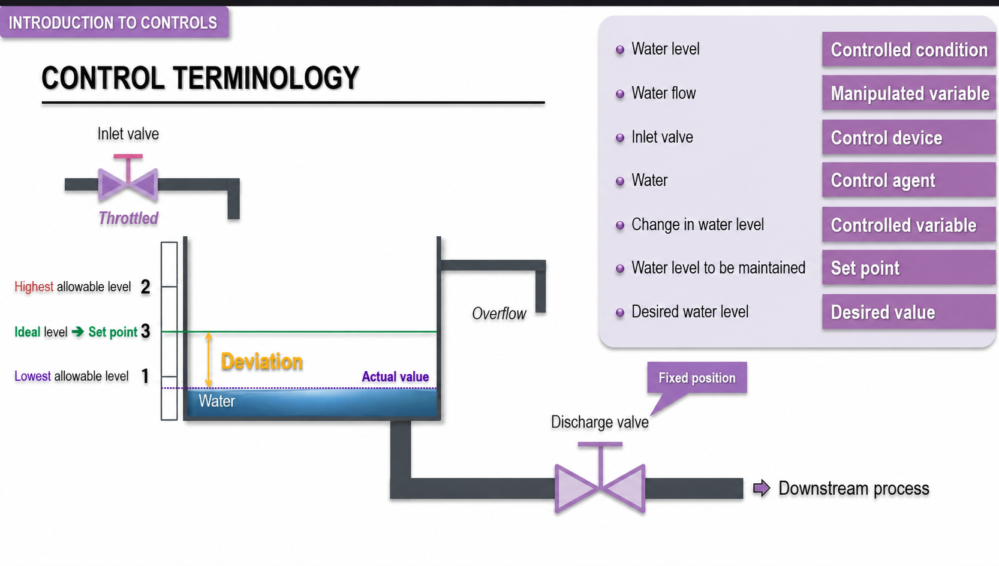

Introdução
No campo da engenharia de controle de processos, a utilização de uma terminologia padronizada é essencial para garantir clareza e evitar ambiguidades. Esses termos são empregados de forma ampla na indústria, permitindo que profissionais de diferentes áreas compreendam com precisão o funcionamento, os objetivos e os limites de um sistema de controle.
Para introduzir esses conceitos, considere um sistema simples de controle manual de nível em um tanque de água. Esse exemplo permite visualizar como os principais termos de controle se relacionam entre si antes de avançar para sistemas automáticos, malhas PID, instrumentação digital e supervisórios industriais.

Sistema básico de controle de nível
Imagine um tanque que recebe água por uma tubulação de entrada equipada com uma válvula. A água também sai do tanque por uma linha de descarga, cuja válvula está fixa em determinada abertura. O objetivo do operador é manter o nível de água dentro de uma faixa adequada, evitando tanto falta de líquido quanto risco de transbordamento.
Para isso, o operador observa o nível de água e atua manualmente na válvula de entrada. Se o nível estiver baixo, ele abre mais a válvula para aumentar a vazão de entrada. Se o nível estiver alto, ele fecha parcialmente a válvula para reduzir a entrada de água. Mesmo sendo manual, esse exemplo contém os mesmos elementos conceituais presentes em uma malha de controle automática.
Faixas de operação
O tanque possui três níveis de referência marcados: nível mínimo, nível máximo e nível ideal. O nível mínimo garante que o fundo do tanque permaneça coberto e que o processo a jusante continue recebendo água. O nível máximo evita transbordamento e operação fora de condição segura. O nível ideal representa o ponto preferencial de operação, também chamado de setpoint quando definido como valor de referência.
O objetivo do controle é manter o nível entre os limites mínimo e máximo, preferencialmente próximo ao valor ideal. Essa faixa aceitável é chamada de intervalo operacional permitido. Dentro dessa faixa, o processo pode operar sem interrupção, sem desperdício e sem violar os limites de segurança.
Principais termos de controle
A seguir estão os principais termos usados na análise de sistemas de controle. No exemplo do tanque, cada termo pode ser associado a uma parte física ou a uma condição observável do processo:
- Variável controlada: é a grandeza que se deseja manter dentro de determinados limites. No exemplo, é o nível de água no tanque.
- Variável manipulada: é a variável que pode ser ajustada para controlar o processo. No exemplo, é a vazão de entrada de água.
- Dispositivo de controle: é o elemento que atua diretamente na variável manipulada. No exemplo, é a válvula de entrada.
- Agente de controle: é o meio físico utilizado para influenciar o sistema. No exemplo, é a própria água.
- Variável controlada dinâmica: é a alteração observada na variável controlada ao longo do tempo. No exemplo, é a variação do nível de água.
- Meio controlado: é o sistema ou material cujo comportamento está sendo controlado. No exemplo, é o líquido dentro do tanque.
Setpoint, valor desejado e valor atual
O setpoint é o valor de referência que o sistema deve atingir ou manter. No exemplo do tanque, o setpoint corresponde ao nível ideal indicado na régua de nível. Esse valor orienta a ação do operador ou do controlador automático, servindo como referência para avaliar se o processo está abaixo, acima ou próximo da condição desejada.
O valor desejado é qualquer valor dentro da faixa aceitável de operação. No exemplo, qualquer nível entre o limite mínimo e o limite máximo pode ser considerado operacionalmente aceitável, ainda que o nível ideal continue sendo o ponto preferencial. O valor atual é o valor real medido da variável controlada em determinado momento. No tanque, é o nível observado da água no instante da medição.
Desvio e offset
O desvio é a diferença entre o valor desejado, ou setpoint, e o valor atual medido. Se o nível ideal é 3 e o nível atual é 2, o desvio é igual a 1 unidade. Esse desvio indica que o processo está distante do ponto desejado e que alguma ação de correção deve ser realizada.
O offset, ou erro permanente, é um desvio que permanece ao longo do tempo mesmo após o sistema atingir regime permanente. Em outras palavras, o processo se estabiliza, mas não exatamente no valor desejado. A presença de offset indica que o sistema não está corrigindo totalmente o erro, algo comum em certos tipos de controle quando não há ação integral ou quando a estratégia de controle é limitada.
Importância da terminologia
A compreensão desses termos é fundamental porque permite uma análise estruturada de sistemas de controle, facilita a comunicação entre engenheiros e técnicos, ajuda no projeto, ajuste e otimização de sistemas e forma a base para compreender estratégias automáticas como controle PID.
Esses conceitos são aplicáveis desde sistemas simples, como o controle manual de nível, até sistemas automatizados industriais complexos. Em uma planta real, a terminologia correta evita interpretações diferentes sobre o que está sendo medido, o que está sendo controlado, qual variável pode ser manipulada e qual erro precisa ser corrigido.
Exemplo prático: operação manual de nível
Considere um operador responsável por garantir que um tanque forneça água continuamente para um processo industrial, sem interrupções e sem desperdício. O operador observa a régua de nível, compara o nível atual com o nível ideal e identifica se existe desvio. Se o nível estiver abaixo do desejado, há falta de água no tanque. Se estiver acima, existe risco de transbordamento.
A ação corretiva ocorre na variável manipulada. O operador abre a válvula de entrada para aumentar a vazão e fazer o nível subir, ou fecha a válvula para reduzir a vazão e fazer o nível descer. Esse ajuste continua até que o nível permaneça dentro da faixa entre mínimo e máximo.
Se, mesmo com ajustes constantes, o nível nunca atinge o ponto ideal, existe um erro permanente, ou offset. O resultado esperado de uma operação bem conduzida é que o processo receba fluxo adequado, o tanque não transborde e a operação permaneça dentro de limites seguros.
Conclusão
A terminologia de controle de processos organiza a forma como analisamos uma malha de controle. Termos como variável controlada, variável manipulada, dispositivo de controle, setpoint, valor atual, desvio e offset não são apenas definições acadêmicas: eles descrevem elementos reais do processo e ajudam a transformar observações de campo em decisões técnicas mais claras.